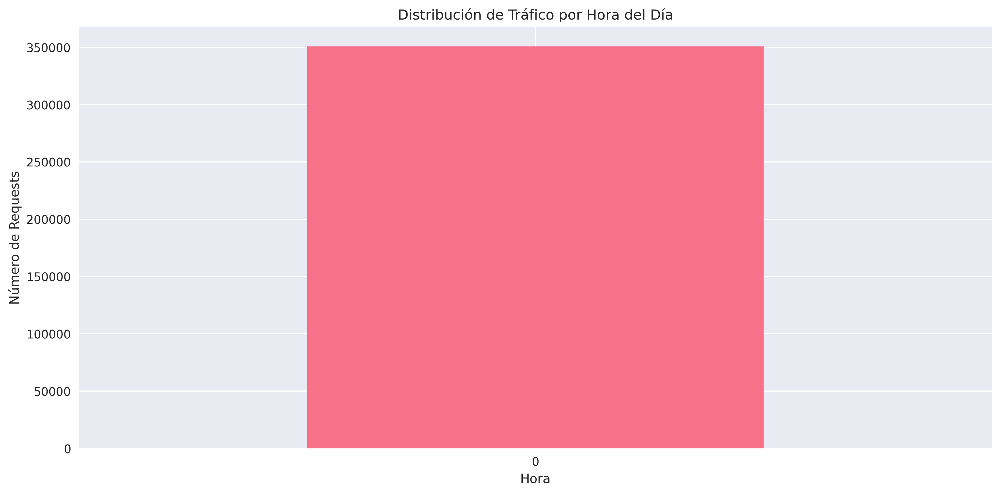
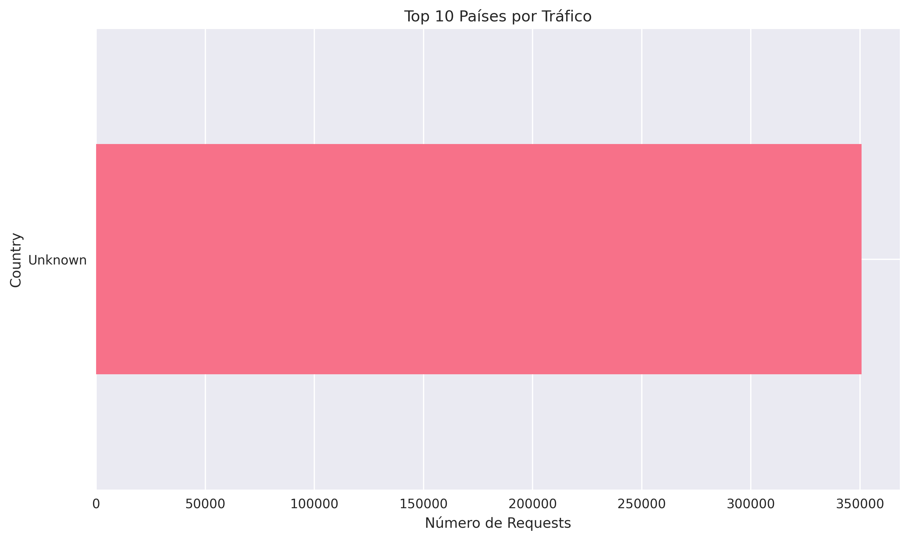
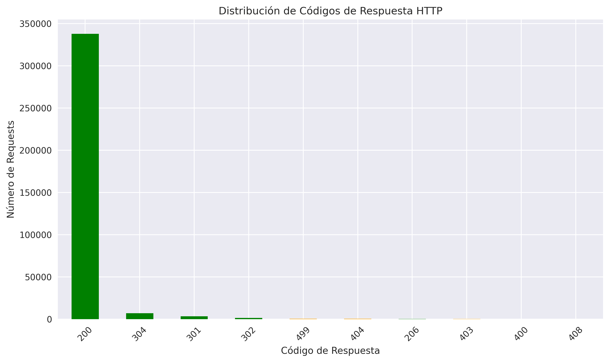

📊 Análisis de Logs Web EClog
Reporte Completo de Análisis de Big Data
Generado el: 18/08/2025 17:27:54
📈 Resumen Ejecutivo
350,683
Total de Requests
4,297
IPs Únicas
1
Usuarios Únicos
99.8%
Tasa de Éxito
0.2%
Tasa de Error
4.0 GB
Datos Transferidos
📅 Período de Análisis
Inicio: 1990-03-11 00:42:36.000
Fin: 1990-03-11 00:56:59.990
📊 Visualizaciones
Hourly Traffic
Top Countries
Response Codes
Bots Vs Humans

Activity Heatmap

⚡ Resultados MapReduce
🌍 Análisis por País (Top 10)
| País | Total Requests |
|---|---|
| Unknown | 350,683 |
⏰ Tráfico por Hora
| Hora | Total Requests |
|---|
🔍 Top IPs Más Activas
| IP | Total Requests |
|---|---|
| 950PL | 6,613 |
| 599PL | 6,147 |
| 3560PL | 4,870 |
| 564PL | 3,601 |
| 2306PL | 3,480 |
| 4015PL | 3,292 |
| 1280PL | 2,667 |
| 12US | 2,446 |
| 268PL | 2,371 |
| 1287PL | 2,327 |
🔄 Distribución de Métodos HTTP
| Método | Cantidad | Porcentaje |
|---|---|---|
| GET | 288,556 | 82.3% |
| POST | 62,075 | 17.7% |
| HEAD | 43 | 0.0% |
| - | 9 | 0.0% |
📝 Conclusiones y Recomendaciones
✅ Conclusiones Principales
- Volumen de Tráfico: Se procesaron 350,683 requests de 4,297 IPs únicas
- Calidad del Servicio: Tasa de éxito del 99.8% y tasa de error del 0.2%
- Transferencia de Datos: Se transfirieron 4.0 GB de datos
🎯 Recomendaciones
- Monitoreo: Implementar alertas para tasas de error superiores al 5%
- Seguridad: Revisar IPs con alto número de requests para detectar posibles ataques
- Performance: Optimizar recursos más solicitados para mejorar tiempos de respuesta
- Capacidad: Planificar capacidad basada en patrones de tráfico por hora
🔧 Información Técnica
Tecnologías Utilizadas
- Hadoop HDFS: Almacenamiento distribuido de logs
- MapReduce: Procesamiento paralelo de análisis por país, hora, IPs y errores
- Apache Hive: Consultas SQL sobre big data
- Python: Limpieza de datos y generación de reportes
- Pandas & Matplotlib: Análisis de datos y visualizaciones